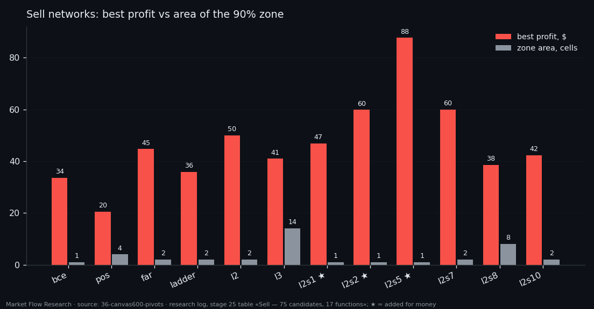

Picking a Network by the Width of Its Good Zone, Not Its Best Point — 42 "Potentially Best" Networks
Every trained network becomes a signal through two knobs: the window W over which its probabilities are summed and the threshold θ that sum must reach. Pick the single best cell of that grid and you usually pick noise. So each of 450 buy candidates and 75 sell candidates was traded on a 72 × 50 grid of W and θ, and for each one we measured how wide the area is where profit stays within 90% of its best. In every loss family the network with the widest such zone was kept — plus, if another epoch earned more than twice as much, that one too. The result: 22 buy and 20 sell networks, all scored on the same validation month.
① A grid of 3,600 cells for every network
For each candidate, every cell of the grid is a run of one side on its own: the signal fires the moment the sum of probabilities over the last W minutes reaches θ; the trade is a long for a buy network or a short for a sell network; one trade per 2.3% zigzag leg; take-profit 1.9%, stop 2.5%; costs 0.07% per side; $1000 start. W runs 10 to 720 minutes in 10-minute steps (72 rows), and θ/W — the average probability needed in the window — runs 0.02 to 1.00 in steps of 0.02 (50 columns).
The 90% zone is the largest rectangle around the best cell in which every cell earns at least 90% of the best. Its area, in cells, says how forgiving the network is: a wide zone means a slightly different window or threshold gives nearly the same money; a one-cell zone means the result exists at one point only. The network's working W and θ are taken from the middle of its zone, not from the best cell.
② Wide and modest, or narrow and rich
Within each loss family the network with the largest 90% zone is the first pick; ties go to more money. Then the richest network of the same family is checked: if it earns more than twice the first pick, it is kept as well and marked as added for money.
For buy networks this rule mattered in four families. In `bce`, `pos` and `focal`, epoch 3 earned the same $30.27 across most or all of the grid — 72, 1,944 and 504 cells — because at that epoch money barely depends on W or θ. The richest epochs of the same families earned five to seven times more ($151.32, $211.01, $164.91) but in zones of 1 to 4 cells. In `ladder`, epoch 0 ($119.61) was added over epoch 6 ($27.84). Altogether 450 buy candidates → 22 networks, 75 sell candidates → 20 networks (three added for money). `dice` (buy) and `focal` (sell) earn nothing in any cell.

③ Sell networks earn less, and the warning that comes with all of this
Sells were scored in a month when BTC rose about 29%, so shorting was swimming against the tide: the best sell picks earned $20–88, against $28–211 for buys. Most sell zones are one or two cells wide; the widest, `l3` epoch 4, holds 90% of its money over W 230–290 minutes and 14 cells. Three sell networks were added for money: `l2s1` e0 ($46.84), `l2s2` e9 ($59.83) and `l2s5` e21 ($87.66) — each in a single cell.
The width rule is a guard against luck, not a cure for it. Every candidate, every zone and every profit here was measured on the same 38 validation days. A wide zone on validation is a better bet than a sharp peak, but it is still a bet about the future. That is why the next step pairs these networks into one bot and then — the part that matters — checks the pairs on stretches they were not chosen on.

Reproduce this study
- Research log (.md, Ukrainian): goal, data, plan, scripts, every confirmed stage and table — enough to rerun the study
- Reproduction kit (.zip): the study's scripts, project rules and base scripts that build every class
If this changed how you read the tape, the natural next step is Volume Is the Fuel — Not the Steering Wheel — We recorded the Binance order book every second for six coins over five months and ran eighteen tests on what volume really does.
Volume Is the Fuel — Not the Steering Wheel
We recorded the Binance order book every second for six coins over five months and ran eighteen tests on what volume really does.
About Market Research Lab — What We Collect and Why
Most market commentary is storytelling.
From Calm to Calm: a Standard for What Counts as a Signal (BTC)
We stopped defining market signals with a stopwatch.
The Wall That Goes Quiet: What Resting Liquidity Predicts
We measured resting limit liquidity sitting on both sides of the book second by second across six coins, and asked the only question that matters:….
Comments
Discussion is powered by GitHub. Enable it by adding secrets/giscus.json (repo IDs from giscus.app).